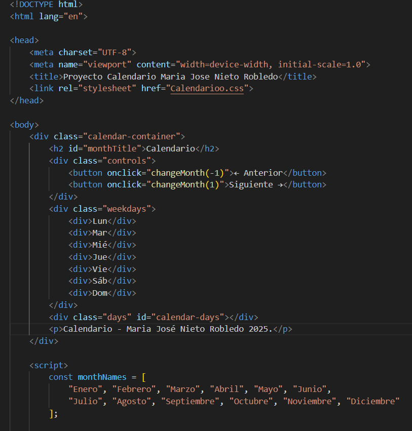

Conoce algunos de mis proyectos:
Calendario interactivo:
Y un poco del código:
Este calendario interactivo fue desarrollado utilizando HTML, CSS y JavaScript para crear una interfaz visualmente atractiva y funcional. La estructura del calendario está organizada mediante una grilla CSS que distribuye los días de la semana y los días del mes, asegurando que se vean de manera clara. Usé JavaScript para agregar interactividad, permitiendo que el usuario haga clic en cualquier día y añada una nota personalizada. Esta funcionalidad es muy útil para crear recordatorios o anotaciones rápidas directamente en el calendario. Además, incluí botones para navegar fácilmente entre los meses del año 2025, lo que hace que el calendario sea dinámico y fácil de usar. Los usuarios pueden ir hacia el mes anterior o siguiente sin problemas. Planeo mejorar la persistencia de las notas en futuras versiones utilizando tecnologías como localStorage, para que los usuarios puedan conservar sus anotaciones incluso después de recargar la página.
Continuará...